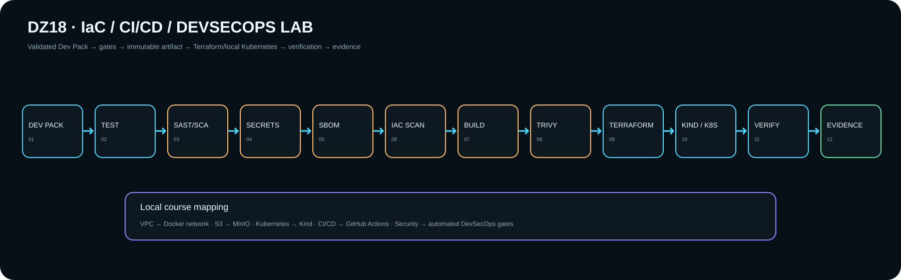

Homework 18 · Engineering draft M1
Первый Delivery / DevSecOps lab
Terraform + Docker + Kind/Kubernetes + MinIO + CI security gates. Сейчас это runnable scaffold; статус LAB будет только после локального apply/deploy и сохранённого evidence.

Lesson requirement → local lab
Инфраструктура
- VPC → Docker network
- S3 → MinIO
- Kubernetes → Kind
- IaC → Terraform
- CI/CD → GitHub Actions
DevSecOps gates
Проверки
- pytest
- Bandit + Semgrep
- pip-audit
- detect-secrets
- CycloneDX SBOM
- Checkov
- Trivy
Activation gate
Что ещё нужно доказать
Terraform apply → Kind cluster → Kubernetes rollout → /health → CI run → scan/SBOM artifacts. Только после этого статус повышается с DRAFT/M1 до LAB/M1.